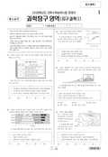

문제지


시험지를 먼저 풀어 보세요. 등급컷·표준점수·난이도는 흐리게 가려 뒀어요.
정답 변경 없음
이의신청 3문항 · 평가원 상세 답변 3문항
이의 요지
이의신청 내용을 보면 금성과 지구의 자전 방향에 대한 이견은 없는 것으로 판단되고 ‘지구에서 관측한 금성의 자전 방향’이라는 표현을 문제 삼는 것으로 보입니다.
평가원 답변
본 문항은 태양계 행성의 자전축이 공전축과 이루는 각도로부터 행성의 자전 방향을 판단할 수 있는지를 평가하는 문항입니다. 이의신청 내용을 보면 금성과 지구의 자전 방향에 대한 이견은 없는 것으로 판단되고 ‘지구에서 관측한 금성의 자전 방향’이라는 표현을 문제 삼는 것으로 보입니다. 이것은 천체의 운동을 표현할 때 어떤 좌표계를 기준으로 하느냐에 따라 사람마다 해석이 전혀 달라지는 문제가 발생하기 때문입니다. 따라서 각자 자기 나름대로의 좌표계를 사용하여 천체의 운동을 표현하는 것은 옳지 않습니다. 이의신청 내용 중에도 모든 행성은 서에서 동으로 자전한다는 표현이 있습니다. 이는 각 행성을 기준으로 표현한 것으로는 일견 옳은 이야기 같지만 금성의 자전 방향이 지구와 반대라고 이해하고 있는 사람은 분명히 틀린 표현으로 받아들일 것입니다. 그렇기 때문에 절대적인 좌표계를 기준으로 행성의 운동을 표현해야 합니다. 문항에 주어진 자전축과 공전축이 이루는 각도를 보면 금성이 177.4°, 지구가 23.5°로 되어 있습니다. 이것은 지구의 북극에 해당하는 부분이 금성에서는 황도의 남극 쪽으로 크게 기울어져 있다는 것을 의미합니다. 이는 자전축이 공전축과 이루는 각도가 90° 이상이면 공전 방향과 자전 방향이 서로 반대 방향으로 관측된다는 것을 의미합니다. 이것을 <보기> ㄱ에서 ‘지구에서 관측한 금성의 자전 방향은 지구와 반대이다’라고 절대 좌표계를 기준으로 정확하고 분명하게 표현한 것입니다. 예를 들어 태양 표면의 흑점을 관측하였을 때 지구의 자전 방향과 반대인 동에서 서로 이동하므로 태양의 자전 방향은 지구와 반대로 관측된다면 옳은 표현일까요? 오히려 태양 표면의 흑점이 동에서 서로 이동하는 것으로 관측되므로 태양의 자전 방향은 지구와 같다고 판단하는 것이 절대 좌표계의 관점에서 관측 사실을 올바르게 해석하여 표현한 것입니다. 따라서 이 문항의 <보기> ㄱ의 표현에는 문제가 없으며 문항과 정답에도 아무런 오류가 없습니다.과학탐구 영역 : 지구과학Ⅰ
이의 요지
이의신청의 요지는 북적도 해류도 항해에 도움을 주지 않은 해류로서 답이 될 수 있다는 것과 지구과학Ⅰ 교과서 중에 대서양의 북적도 해류가 표시되지 않은 것도 있으므로 지구과학Ⅰ 교육 범위를 벗어났다는 의견입니다.
평가원 답변
본 문항은 영국의 해양 탐사선 챌린저호가 1892년부터 1876년까지 4년간 항해한 탐사 경로와 관련하여 해류의 방향을 묻는 문항입니다. 이의신청의 요지는 북적도 해류도 항해에 도움을 주지 않은 해류로서 답이 될 수 있다는 것과 지구과학Ⅰ 교과서 중에 대서양의 북적도 해류가 표시되지 않은 것도 있으므로 지구과학Ⅰ 교육 범위를 벗어났다는 의견입니다. 우선 북적도 해류에 대해 답변 드리면 북적도 해류는 북대서양과 북태평양에서 동에서 서로 흐르는 해류입니다. 특히, 북대서양에서 흐르는 북적도 해류는 범선 항해 시절에 유럽에서 아메리카 대륙으로 이동하기 위해 빈번하게 이용했던 중요한 해류로서 챌린저호 또한 이 해류를 이용했으므로 이 문항의 정답이 될 수 없습니다. 두 번째로 지구과학Ⅰ 교육 범위를 벗어났다는 의견에 대해서는 우선 검정 교과서 중 대서양의 북적도 해류를 표현하고 있는 교과서가 훨씬 더 많으며, 페루 해류는 모든 교과서에 제시되어 있습니다. 세계 해류 분포에 대한 제7차 교육과정 내용을 보면 “세계 해류도를 사용하여 전반적인 해류의 분포를 조사하고, 우리나라 부근의 해류 형성 원인과 그 영향을 설명한다.”라고 명시되어 있습니다. 따라서 본 문항은 세계 해류도를 사용하여 전반적인 해류의 분포를 조사하고자 하는 제7차 교육과정의 기본 취지를 충실하게 반영한 문항입니다. 따라서 이 문항과 정답에는 오류가 없습니다.과학탐구 영역 : 지구과학Ⅰ
이의 요지
이의신청하신 내용은 <보기> ㄷ의 ‘흑점 수의 주기가 시작될 때 나타난 흑점들의 평균 겉보기 이동속도는 주기가 끝날 때보다 느리다’라는 표현이 중의적으로 해석될 수 있다는 것입니다.
평가원 답변
본 문항은 태양의 흑점을 장기간 관측하여 얻은 자료로부터 위도에 따른 태양의 자전 주기를 올바르게 해석할 수 있는지를 평가하는 문항입니다. 이의신청하신 내용은 <보기> ㄷ의 ‘흑점 수의 주기가 시작될 때 나타난 흑점들의 평균 겉보기 이동속도는 주기가 끝날 때보다 느리다’라는 표현이 중의적으로 해석될 수 있다는 것입니다. 그러나 이러한 주장은 흑점 수의 주기에 따라 나타나는 위도별 흑점 분포에 대한 개념 이해가 부족한 상태에서 문제에 제시된 자료를 제대로 파악하지 못하여 생긴 오해 때문으로 보입니다. 문항에 제시된 흑점 수의 주기에 대한 설명을 보면 흑점 수의 주기는 약 11년이며 주기가 시작될 때는 위도 35° 부근에서 흑점이 나타나기 시작해서 주기가 진행될수록 적도 가까운 쪽으로 새로운 흑점이 나타나는 양상을 보여 결과적으로 흑점 수의 주기가 진행될수록 적도 부근의 흑점 수가 증가하는 경향을 보인다는 정보를 제공하고 있습니다. <보기> ㄷ의 진술에서 ‘흑점들의 평균 겉보기 이동 속도’는 주기가 진행되는 상황에서 태양 표면에 보이는 전체 흑점의 평균 겉보기 이동 속도를 의미한다는 데에는 이견이 없을 것입니다. 이 문항은 흑점의 이동 속도가 위도별로 다르며 시간에 따라 나타나는 위치가 다르다는 두 사실을 가지고 유추해야 하는 다소 복잡한 내용이기 때문에 한 가지 내용만 가지고 판단하면 오해할 수 있습니다. 흑점 수의 한 주기가 시작되어 끝날 때까지 흑점들이 나타나는 위도대가 달라지므로 전체 흑점의 평균 겉보기 이동 속도는 주기가 시작할 때가 끝날 때보다 느린 것이 맞습니다. 이의신청 내용 중에는 <보기> ㄷ의 서술에 ‘...(주기가 끝날 때) 나타난 흑점들의 평균 겉보기 이동속도...’라는 표현을 추가해야 한다는 주장도 있지만 이는 흑점 수 주기가 시작될 때 나타난 흑점들이 주기가 끝날 때까지 변동 없이 그대로 존재한다는 잘못된 개념으로 인한 오해에서 비롯된 것으로 보입니다. 태양 표면의 흑점들은 흑점 수의 주기가 진행되는 동안 나타나고 사라지는 것을 계속 반복하며 흑점의 수명은 수일에서 수개월 정도입니다. 표현에 있어 같은 어절의 반복은 생략하는 것이 어법상으로 옳으므로 의미상의 문제는 없습니다. 따라서 본 문항과 정답에는 오류가 없습니다.
발행 기관: 한국교육과정평가원(KICE). 파일 위치: 이 사이트가 보관한 사본. 저작권은 발행 기관에 있습니다. 원본과 다르거나 게시 중단이 필요하면 연락처로 알려 주세요. 등급컷 출처 구분은 데이터 원칙에서 설명합니다.